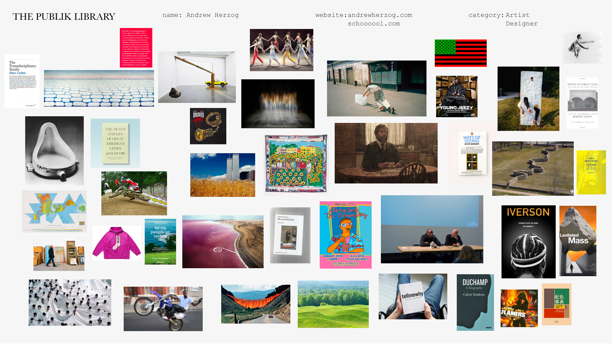
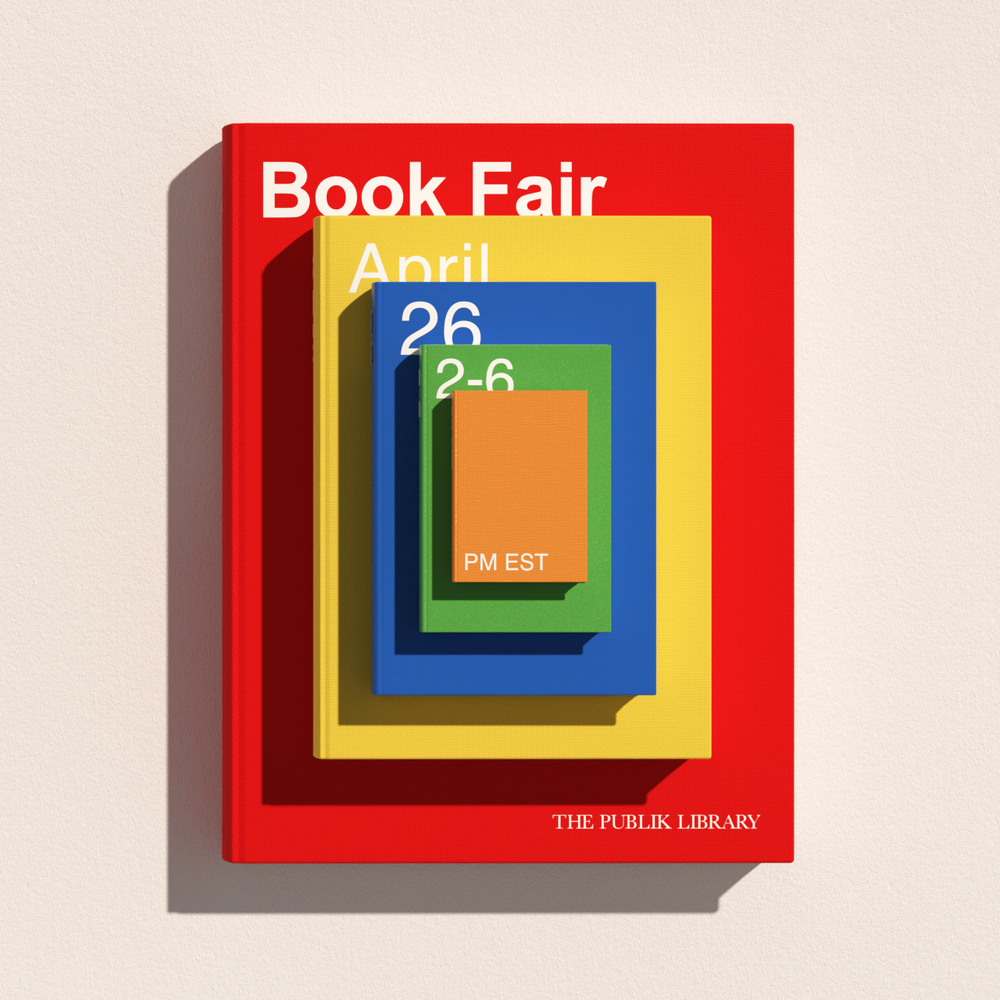

The Stacks exists as a public archive of the things (books, films, artworks, lectures, places, people, etc, etc) that have shaped the paths of top working creatives.

Those “things” are organized into folders bearing the names of creatives who’ve filled them with the inputs and inspirations that have had a significant impact on their lives. These folders are open to the public for anyone to dig through. Their content can act as a catalyst for inquiry and learning. The goal is to create an ever evolving depository of inputs that can offer an ever growing source of insights for young creatives and life long students.
The Book Fair is a quarterly lecture series where selected contributors to The Stacks talk about the inputs and inspirations that have had a significant impact on their lives and careers.

The Book Fair is open and free to the public. The virtual nature of these events are partly fueled by the situation we find ourselves in, partly because using the power of the web helps democratize these talks. After the virtual event the talks will be archived on The Stacks in their respective folders. Our first group of speakers on April 26th will be the creative director of PLAYLAB Inc, Archie Lee Coates IV, illustrator & art director Simone Noronha, award winning curator and writer Sara Raza, and artist & partner at School - Andrew Herzog.